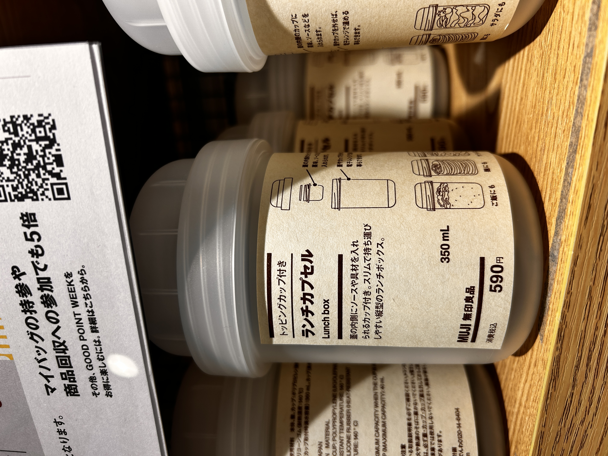

MUJI CORN TEA
2026.05.06
Hello, blog!
MAYA AND THE MYSTERIES OF MUJI pt.3
Okay. Two reporting from Muji:
CORN TEA IS INCREDIBLE!!! If you don’t remember, corn tea was my first introduction to the incredible and vast catalog of Muji. I finally got it, and boy oh boy, why didn’t i get it earlier. It’s like I’m eating corn flakes. It’s not sweet, but it’s like my saliva is producing sugar to make up for the expected sweetness. Plus, I love the smell of this corn they use for this tea. Maybe I’m just homesick for the midwest… I drank two cups of corn tea and frankly, I WANT MORE! It’s so good.
I found this in the Muji:

Muji, this is not a lunchbox. Yes, I can see the possible lunches this container may pack shown on the side, but this is no lunchbox. It's not even a box. This is a large pill container, no place for your spaghetti bolognese. Who thought of this? Another mystery… a Muji mystery…
There’s still more to discover, like why the checkout guy could not comprehend why I didn’t need a bag anymore. Here in Japan, the clerk will always ask if you need a bag since it costs some yen. At the Muji checkout, I initially said yes but double backed when I realized I had a bag already. I told the guy “it’s ok. I don’t need a bag anymore.” The guy did not understand. He was telling me that I already paid for the bag. I was like “no, it’s ok. I don’t need the money.” Mind you, the bag was 10 yen, literally less than a penny. He persisted, almost whipping out the google translate to tell me that I am owed a bag. Since I already witnessed him dealing with an annoying foreigner, I decided to accept it and awkwardly walk with an empty bag throughout the mall. It looked like I bought something but forgot it at checkout. Another Muji mystery...
FOOD PREP!
I decided that I’m gonna start prepping my food instead of going out to the combini or binging on Parms (the best ice cream bars). I picked up 10 more $1.47 pork puns from 551 Horai, miso soup mix, a plate and bowl from Muji, corn tea from Muji (as you know), milk donuts from Muji, and a broccoli salad from the conbini. My dinner will be a pork bun, miso soup, a vegetable, a donut, and delicious corn tea. Food prep is fun. I’m gonna have to figure out a lunch/breakfast situation since I don’t really want to repeat meals. Setting this as my goal for tomorrow, meal prep for breakfast/lunch + getting a week’s worth of vegetable side dishes from Aeon’s.
Today, I began an audiobook “Sky Daddy” by Kate Folk (incredible name). It’s about a woman who falls in love with planes. Her goal is to get into a plane crash because it’s almost like a marriage for her. It’s really interesting.
HAPPY 30TH BLOG POST!!! wow… almost a 31 day month! Already a 30 day month! Two days more than February!!! 30!!! Okay, goodnight andじゃね！